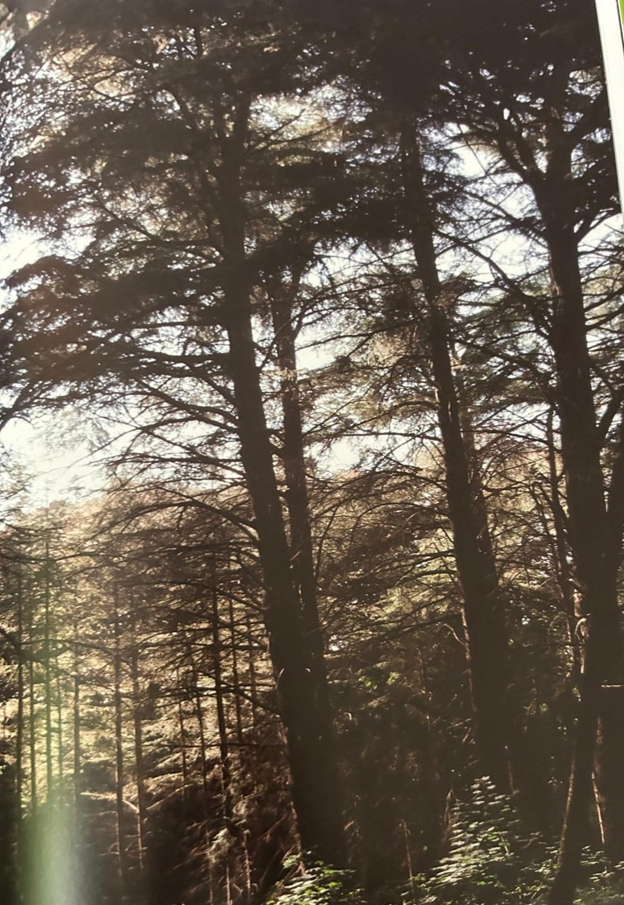

Groepen › Oude Wereld
30. Algerije, Baborgebergte

In het oostelijke deel van het Noord-Afrikaanse Atlasgebergte, opzij van Algiers, ligt de berg die in het Berbers Djebel Babor wordt genoemd. In de hogere regionen van de Babor berg kampten van oudsher Algerijnse zilversparren en Atlasceders om de macht. De populatie van Algerijnse zilverspar is daar ter plaatse ondertussen zo ver gedecimeerd dat hij op de IUCN rode lijsten aangemerkt staat als ‘met uitsterven bedreigd’. Maar ook de Atlasceder, die met een makkelijkere uitzaai en een sterkere groei een concurrentieel voordeel had, is door de ontbossingen flink uitgedund. Beide soorten zijn in arboretumgroep 30 met twee generaties goed vertegenwoordigd en vooral de grote Atlasceders zijn bijzonder indrukwekkend. In de lagere gebergtezones staan groene bossen van Algerijnse eik, Atlaseik, en meer naar het Rifgebergte toe Pyreneese en Portugese eik. De ondergroei bestaat uit bladhoudende soorten als Laurier en Boomheide. Deels onder de overgebleven Zomereiken in Groep 30 spreiden mooie groepen van Venijnboom of Taxus hun lage kronen. Daartussen ook een mooi en groot exemplaar van de Atlaseik.
Uit het boek
2,08 ha · 5 soorten · 573 bomen · weerstation Babor
- Een "tempel" van atlasceders (1904/1908), de ernstig bedreigde Algerijnse zilverspar en één reusachtige atlaseik.

Bron: Geografisch Arboretum Tervuren. Een wereldreis rond bomen (2020), p. 230 en volgende.
Deelgroepen
- 30 – Oost-Kabylië, Algerije
Soorten in deze groep (5)
- Abies numidicaAlgerijnse zilverspar · 301 bomen
- Cedrus libani subsp. atlantica175 bomen
- Taxus baccataGewone taxus · 92 bomen
- Ilex aquifoliumEuropese hulst · 4 bomen
- Quercus afaresAtlaseik · 1 boom
Tekst en foto: arboretum-tervuren.be (Koninklijke Schenking), met toestemming gebruikt.